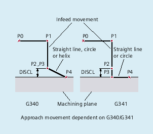
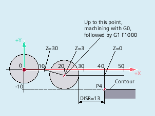
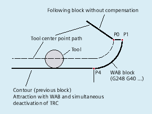
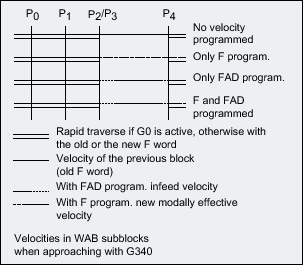
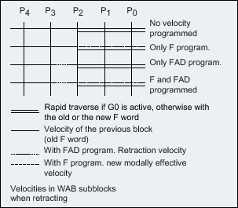
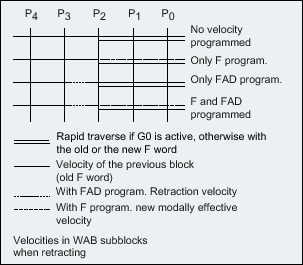

Further information
Selecting the approach and retraction contour
The approach and retraction contour are selected with the appropriate G command from the 2nd G group:
G147: | Approach with a straight line |
G247: | Approach with a quadrant |
G347: | Approach with a semicircle |
G148: | Retraction with a straight line |
G248: | Retraction with a quadrant |
G348: | Retraction with a semicircle |
Approach movements with simultaneous activation of the tool radius compensation
Selecting the approach and retraction direction
Use the tool radius compensation (G140, default setting) to determine the approach and retraction direction with positive tool radius:
G41 active → approach from left
G42 active → approach from right
G141, G142 and G143 provide further approach options.
The G codes are only significant when the approach contour is a quadrant or a semicircle.
Motion steps between start point and end point (G340 and G341).
In all cases, the movements are made up of one or more straight lines and, depending on the G command for determining the approach contour, an additional straight line or a quadrant or semicircle. The two variants of the path segmentation are shown in the following figure:
G340: | Approach with a straight line from point P0 to point P1. This straight line is parallel to the machining plane, if parameter DISRP has not been programmed. Infeed perpendicular to the machining plane from point P1 to point P3 to the safety clearance to the machining plane defined by the DISCL parameter. Approach end point P4 with the curve determined by the G command of the second group (straight line, circle, helix). If G247 or G347 is active (quadrant or semicircle) and start point P3 is outside the machining plane defined by the end point P4, a helix is inserted instead of a circle. Point P2 is not defined or coincides with P3. The circle plane or the helix axis is determined by the plane, which is active in the SAR block (G17/G18/G19), i.e. the projection of the start tangent is used by the following block, instead of the tangent itself, to define the circle. The movement from point P0 to point P3 takes place along two straight lines at the velocity valid before the SAR block. |
G341: | Approach with a straight line from point P0 to point P1. This straight line is parallel to the machining plane, if parameter DISRP has not been programmed. Infeed perpendicular to the machining plane from point P1 up to the safety clearance to the machining plane defined by the DISCL parameter in point P2. Infeed perpendicular to the machining plane from point P2 to point P3. Approach end point with the curve determined by the G command of the second group. P3 and P4 are located within the machining plane, with the result that a circle is always inserted instead of a helix with G247 or G347. |
In all cases that include the position of the active plane G17/G18/G19 (circular plane, helical axis, infeed motion perpendicular to the active plane), any active rotating frame is taken into account.
Length of the approach straight line or radius for approach circles (DISR)
Approach/retract with straight lines
DISR specifies the distance of the cutter edge from the starting point of the contour, i.e. the length of the straight line when TRC is active is the sum of the tool radius and the programmed value of DISR. The tool radius is only taken into account when it is positive.
The resulting straight line length must be positive, i.e. negative values for DISR are allowed provided that the absolute value of DISR is less than the tool radius.
Approach/retract with circles
DISR specifies the radius of the tool center point path. If TRC is activated, a circle is produced with a radius that results in the tool center point path with the programmed radius.
Distance of point P2 from the machining plane (DISCL)
If the position of point P2 is to be specified by an absolute reference on the axis perpendicular to the circle plane, the value must be programmed in the form DISCL=AC(...).
The following applies for DISCL=0:
With G340: The whole of the approach motion now only consists of two blocks (P1, P2 and P3 are combined). The approach contour is formed by P1 to P4.
With G341: The whole approach contour consists of three blocks (P2 and P3 are combined). If P0 and P4 are on the same plane, only two blocks result (infeed movement from P1 to P3 is omitted).
The point defined by DISCL is monitored to ensure that it is located between P1 and P3, i.e. the sign must be identical for the component perpendicular to the machining plane in all motions that possess such a component.
On detection of a reversal of direction, a tolerance defined by the machine data MD20204 $MC_SAR_CLEARANCE_TOLERANCE is permitted.
Distance of point P1 (retraction plane) from the machining plane (DISRP)
If the position of point P1 is to be specified by an absolute reference on the axis perpendicular to the machining plane, the value must be programmed in the form DISRP=AC(...).
If this parameter is not programmed, point P1 has the same distance to the machining plane as point P0, i.e. the approach straight line P0 → P1 is parallel to the machining plane.
The system checks that the point defined by DISRP lies between P0 and P2, i.e. in all movements that have a component perpendicular to the machining plane (e.g. infeed movements, approach movements from P3 to P4), this component must have the same leading sign. It is not permitted to change direction. An alarm is output if this condition is violated.
On detection of a reversal of direction, a tolerance defined by the machine data MD20204 $MC_SAR_CLEARANCE_TOLERANCE is permitted. However, if P1 is outside the range defined by P0 and P2, but the deviation is less than or equal to this tolerance, it is assumed that P1 is in the plane defined by P0 or P2.
Programming of the end point
The end point is generally programmed with X... Y... Z...
The programming of the contour end point when approaching differs greatly from that for retraction. Both cases are therefore treated separately here.
Programming of end point P4 for approach
End point P4 can be programmed in the actual SAR block. Alternatively, P4 can be determined by the end point of the next traversing block. More blocks can be inserted between an SAR block and the next traversing block without moving the geometry axes.
Example:
| Program code | Comment |
|---|---|
| $TC_DP1[1,1]=120 | ;Milling tool T1/D1 |
| $TC_DP6[1,1]=7 | ;Tool with 7 mm radius |
| N10 G90 G0 X0 Y0 Z30 D1 T1 | |
| N20 X10 | |
| N30 G41 G147 DISCL=3 DISR=13 Z=0 F1000 | |
| N40 G1 X40 Y-10 | |
| N50 G1 X50 | |
| ... |
N30/N40 can be replaced by:
or
N30 G41 G147 DISCL=3 DISR=13 F1000N40 G1 X40 Y-10 Z0 Programming of end point P0 for retraction
For retraction, the end point of the SAR contour cannot be programmed in a following block, i.e. the end position is always taken from the SAR block, irrespective of how many axes have been programmed. When determining the end point, a distinction is made between the following three cases:
No geometry axis is programmed in the SAR block. In this case, the contour ends at point P1 (if DISRP has been programmed), at point P2 (if DISCL, but not DISRP has been programmed) or point P3 (if neither DICLS nor DISRP has been programmed).
The position in the axes, which describe the machining plane, is determined by the retraction contour (end point of the straight line or arc). The axis component perpendicular to this is defined by DISCL or DISPR. If in this case both DISCL=0 and DISRP=0, the motion is completely in the plane, i.e. points P0 to P3 coincide.
Only the axis perpendicular to the machining plane is programmed in the SAR block. In this case, the contour ends at point P0. If DISRP has been programmed (i.e. points P0 and P1 do not coincide), the straight line P1 → P0 is perpendicular to the machining plane. The positions of the two other axes are determined in the same way as in 1.
At least one axis of the machining plane is programmed. The second axis of the machining plane can be determined modally from its last position in the preceding block.
The position of the axis perpendicular to the machining plane is generated as described in 1. or 2., depending on whether this axis is programmed or not. The position generated in this way defines the end point P0. If the SAR retraction block is also used to deactivate the tool radius compensation, in the first two cases, an additional path component is inserted in the machining plane from P1 to P0 so that no movement is produced when the tool radius compensation is deactivated at the end of the retraction contour, i.e. this point defines the tool center point and not a position on a contour to be corrected. In case 3, no special measures are required for deselection of the tool radius compensation, because the programmed point P0 already directly defines the position of the tool center point at the end of the complete contour.
The behavior in cases 1 and 2, i.e. when an end point is not explicitly programmed in the machining plane with simultaneous deselection of the tool radius compensation, is shown in the following figure:
Approach and retraction velocities
Velocity of the previous block (G0)
All motions from P0 up to P2 are executed at this velocity, i.e. the motion parallel to the machining plane and the part of the infeed motion up to the safety clearance.
Programming with FAD
Specification of the feedrate for
G341: Infeed movement perpendicular to the machining plane from P2 to P3
G340: From point P2 or P3 to P4.
If FAD is not programmed, this part of the contour is traversed at the speed which is active modally from the preceding block, in the event that no F command defining the speed is programmed in the SAR block.
Programmed feedrate F
This feedrate value is effective as of P3 or P2 if FAD is not programmed. If no F word is programmed in the SAR block, the speed of the previous block is active.
Example:
| Program code | Comment |
|---|---|
| $TC_DP1[1,1]=120 | ;Milling tool T1/D1 |
| $TC_DP6[1,1]=7 | ;Tool with 7 mm radius |
| N10 G90 G0 X0 Y0 Z20 D1 T1 | |
| N20 G41 G341 G247 DISCL=AC(5) DISR=13 FAD 500 X40 Y-10 Z=0 F200 | |
| N30 X50 | |
| N40 X60 | |
| ... |
During retraction, the roles of the modally active feedrate from the previous block and the programmed feedrate value in the SAR block are reversed, i.e. the actual retraction contour is traversed with the old feedrate and a new speed programmed with the F word applies from P2 up to P0.
 
Reading positions
Points P3 and P4 can be read in the WCS as a system variable during approach.
$P_APR: reading P
3 (initial point)
$P_AEP: reading P
4 (contour starting point)
$P_APDV: read whether $P_APR and $P_AEP contain valid data